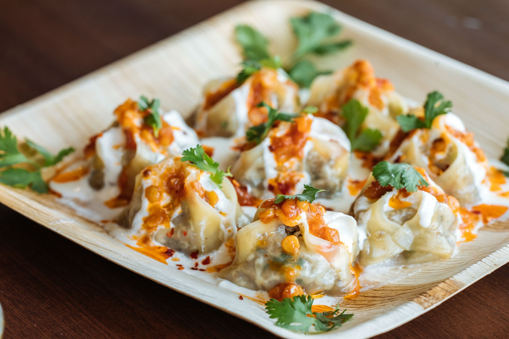
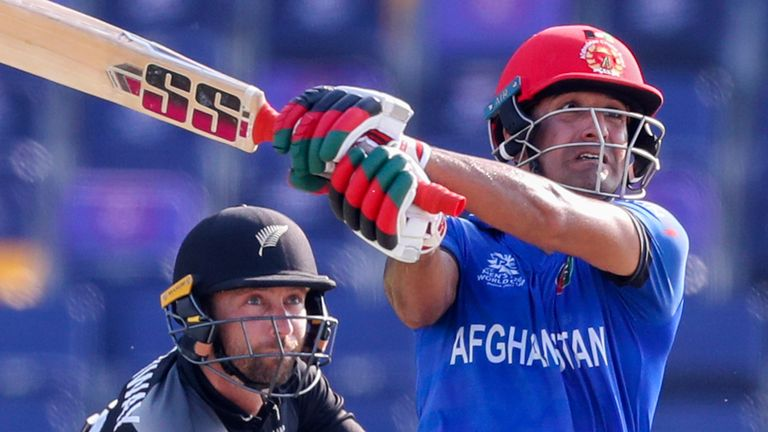
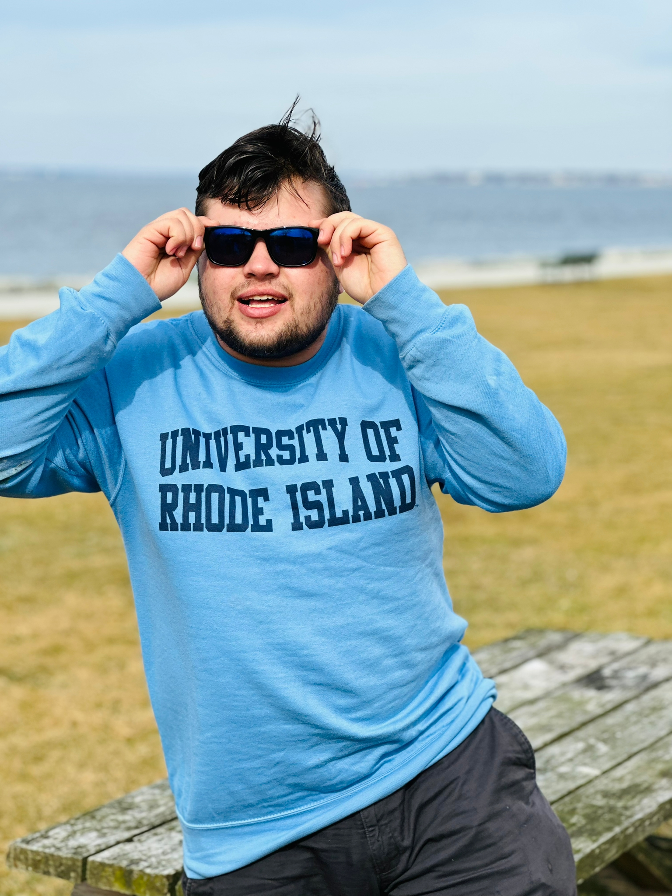

About Me
I am Hassinullah Niazy, student of Computer Science in University of Rhode Island. I am a transfer student from Afghanistan,
a country in central Asia. I was studying Computer Engineering at Kabul Polytechnic University in Afghanistan.
prior to URI, I was working with Dorcas International with department of Employment. I was graduated from high school on 2018.
I like to cook and my favourite food is Ashak.
Ashak (an Afghan Cuisine)

I love to travel and discover places around the world, meet new people from different countries and cultures.
I can speak 6 languages.
1.English 2.Dari 3.Pashto
4.Persian 5.Hindi 6.Urdu
I like playing Cricket and Soccer. I was a part of KPU Cricket Team.
Cricket

Colt State Park:
